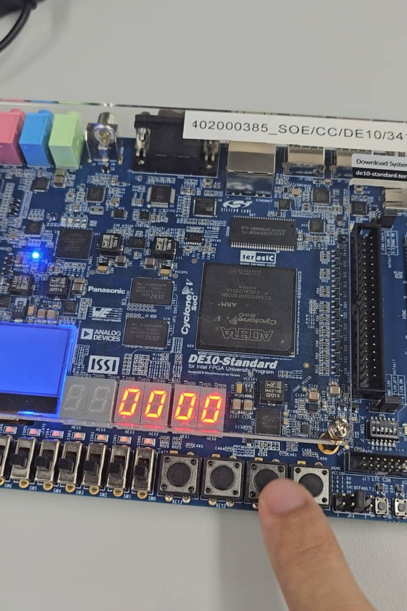
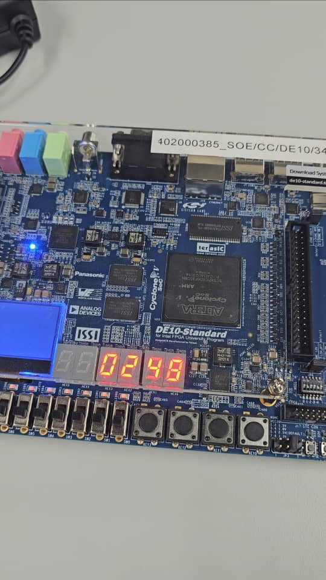
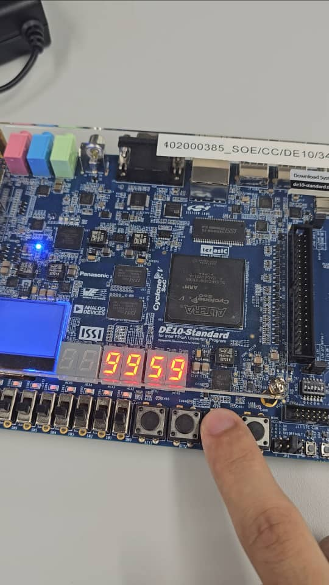

100-Minute Stopwatch
A hardware-validated 100-minute digital stopwatch designed at the Register-Transfer Level (RTL), featuring precise clock division, synchronous BCD counter logic, and seven-segment display multiplexing.

Project Overview
This project focuses on designing and validating a 100-minute digital stopwatch implemented at the Register-Transfer Level (RTL) using Verilog HDL on the Intel DE10-Standard FPGA board. Designed to run on a native 50 MHz system clock source, the core logic converts high-frequency oscillator pulses into precise one-second time intervals using a 26-bit clock division scheme. The timing resolution drives a cascade of synchronous BCD (Binary-Coded Decimal) counters spanning four discrete 7-segment LED display outputs.
To ensure robust execution on hardware, the architecture implements dedicated control state logic for debouncing and tracking push-button inputs. The stopwatch features start/stop toggle operations, zero-reset functionality, and auto-locking mechanisms upon hitting the maximum "99:59" limit. Each digit is independently decoded into 7-segment active-low vector registers, providing real-time hardware telemetry without dynamic display flicker or timing drift.
Key Features & Implementation
- Dual Push-Button Control: Start/stop state toggling via KEY1 with active synchronous edge tracking.
- Synchronous BCD Counters: Cascaded digit counters handling second and minute intervals (0–9, 0–5, 0–9, 0–9).
- Auto-Locking Limit: Built-in terminal state locking at "99:59" to prevent rollover overflow errors.
- Active-Low Decoding: Combinational lookup tables mapping BCD values directly to DE10-Standard 7-segment displays.
Code
module four_digit_stopwatch (
input wire clk, // CLOCK_50; 1-bit scalar 50MHz unconverted clk signal
input wire mode, // KEY1; 1-bit scalar that indicates the current mode start(1)/stop(0)
input wire rst, // KEY0; 1-bit scalar reset for reset
// 4 * 7-bit wide vector output registers storing the LED patterns corresponding to each counter
output reg [6:0] disp0,
output reg [6:0] disp1,
output reg [6:0] disp2,
output reg [6:0] disp3
);
reg [25:0] clk_50MHz; // 26-bit wide vector that stores the current iteration of the 50MHz clock
reg [3:0] counter0; // counter for first display
reg [2:0] counter1; // counter for second display
reg [3:0] counter2; // counter for third display
reg [3:0] counter3; // counter for fourth display
reg status; // 1-bit scalar status for start/stop
reg mode_prev; // holds previous mode of mode register; acts as a trigger
// initialization of values
initial begin
status = 1'b0; // idle at power-on
clk_50MHz = 26'd0; // initial clock iteration set to 0
mode_prev = 1'b1; // should always be 1 to be opposite to the press of the push button
counter0 = 4'b0000; // (0-9)
counter1 = 3'b000; // (0-5)
counter2 = 4'b0000; // (0-9)
counter3 = 4'b0000; // (0-9)
end
always @(posedge clk or negedge rst) begin
// rst follows the on power-on conditions
if (rst == 1'b0) begin
status <= 1'b0;
clk_50MHz <= 26'd0;
mode_prev <= 1'b1;
counter0 <= 4'b0000;
counter1 <= 3'b000;
counter2 <= 4'b0000;
counter3 <= 4'b0000;
end else begin
// if previous mode is 1 and current mode is 0, trigger status change
mode_prev <= mode;
if (mode_prev == 1'b1 && mode == 1'b0) begin
status <= ~status; // alternates the values of status (running/idle)
end
// if (status is running) proceed normally
if (status == 1'b1) begin
clk_50MHz <= clk_50MHz + 1; // increments clk 50,000,000 times in one second/cycle
if (clk_50MHz == 50000000) begin
clk_50MHz <= 26'd0;
// if stopwatch reaches "99:59" change the status to idle and exit
if (counter3 >= 4'b1001 && counter2 >= 4'b1001 && counter1 >= 3'b101 && counter0 >= 4'b1001) begin
status <= 1'b0;
end else begin
counter0 <= counter0 + 4'b0001;
// if counter0 reaches 9, increment counter1 and reset counter0
if (counter0 >= 4'b1001) begin
counter0 <= 4'b0000;
counter1 <= counter1 + 3'b001;
// if counter1 reaches 5, increment counter2 and reset counter1
if (counter1 >= 3'b101 && counter0 >= 4'b1001) begin
counter0 <= 4'b0000;
counter1 <= 3'b000;
counter2 <= counter2 + 4'b0001;
// if counter2 reaches 9, increment counter3 and reset counter2
if (counter2 >= 4'b1001 && counter1 >= 3'b101 && counter0 >= 4'b1001) begin
counter0 <= 4'b0000;
counter1 <= 3'b000;
counter2 <= 4'b0000;
counter3 <= counter3 + 4'b0001;
end
end
end
end
end
end
end
end
// treat every 7-segment separately
always @(*) begin // triggers at anything(*)
case (counter0) // condition statement
4'b0000 : disp0 = 7'b1000000; // 0
4'b0001 : disp0 = 7'b1111001; // 1
4'b0010 : disp0 = 7'b0100100; // 2
4'b0011 : disp0 = 7'b0110000; // 3
4'b0100 : disp0 = 7'b0011001; // 4
4'b0101 : disp0 = 7'b0010010; // 5
4'b0110 : disp0 = 7'b0000010; // 6
4'b0111 : disp0 = 7'b1111000; // 7
4'b1000 : disp0 = 7'b0000000; // 8
4'b1001 : disp0 = 7'b0010000; // 9
default : disp0 = 7'b0000110; // display E in case of error
endcase
end
always @(*) begin // triggers at anything(*)
case (counter1) // condition statement
4'b0000 : disp1 = 7'b1000000; // 0
4'b0001 : disp1 = 7'b1111001; // 1
4'b0010 : disp1 = 7'b0100100; // 2
4'b0011 : disp1 = 7'b0110000; // 3
4'b0100 : disp1 = 7'b0011001; // 4
4'b0101 : disp1 = 7'b0010010; // 5
4'b0110 : disp1 = 7'b0000010; // 6
4'b0111 : disp1 = 7'b1111000; // 7
4'b1000 : disp1 = 7'b0000000; // 8
4'b1001 : disp1 = 7'b0010000; // 9
default : disp1 = 7'b0000110; // display E in case of error
endcase
end
always @(*) begin // triggers at anything(*)
case (counter2) // condition statement
4'b0000 : disp2 = 7'b1000000; // 0
4'b0001 : disp2 = 7'b1111001; // 1
4'b0010 : disp2 = 7'b0100100; // 2
4'b0011 : disp2 = 7'b0110000; // 3
4'b0100 : disp2 = 7'b0011001; // 4
4'b0101 : disp2 = 7'b0010010; // 5
4'b0110 : disp2 = 7'b0000010; // 6
4'b0111 : disp2 = 7'b1111000; // 7
4'b1000 : disp2 = 7'b0000000; // 8
4'b1001 : disp2 = 7'b0010000; // 9
default : disp2 = 7'b0000110; // display E in case of error
endcase
end
always @(*) begin // triggers at anything(*)
case (counter3) // condition statement
4'b0000 : disp3 = 7'b1000000; // 0
4'b0001 : disp3 = 7'b1111001; // 1
4'b0010 : disp3 = 7'b0100100; // 2
4'b0011 : disp3 = 7'b0110000; // 3
4'b0100 : disp3 = 7'b0011001; // 4
4'b0101 : disp3 = 7'b0010010; // 5
4'b0110 : disp3 = 7'b0000010; // 6
4'b0111 : disp3 = 7'b1111000; // 7
4'b1000 : disp3 = 7'b0000000; // 8
4'b1001 : disp3 = 7'b0010000; // 9
default : disp3 = 7'b0000110; // display E in case of error
endcase
end
endmoduleHardware & Media Gallery

Figure 1. Stopwatch at reset

Figure 2. Stopwatch running

Figure 3. Stopwatch locked